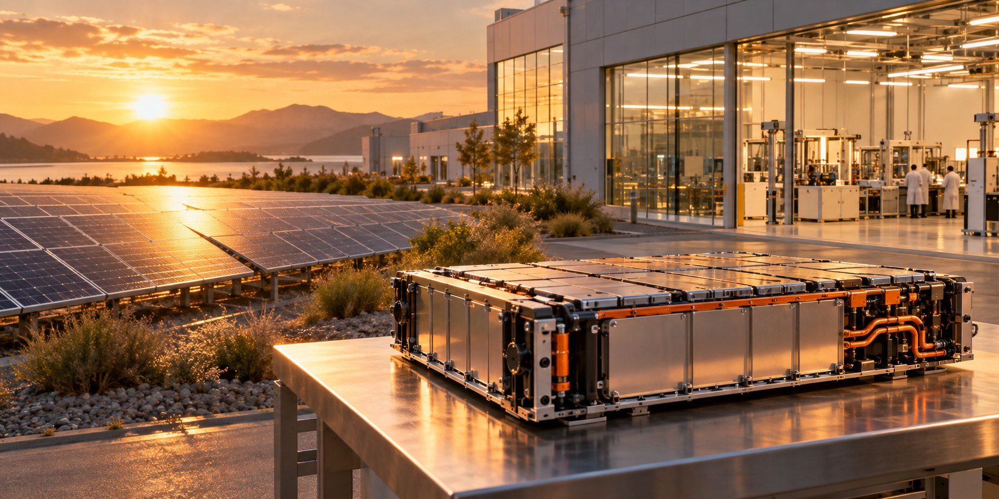

Lithium-ion
An area of energy-storage and related manufacturing experience. Cell chemistry, application and processing requirements must be defined for each project.

Capture sunlight. Store possibility.
Sunlight offers an energy source. Storage helps connect its availability with the time energy is needed.
According to the experience shared by our team, Pactive Korea has devoted significant effort to solar-related manufacturing and technology, and to energy businesses involving lithium-ion, lithium-polymer and solid-state battery technologies.
Its role brings an industrial engineering perspective. Neipclova seeks to connect that experience to a broader vision of smart energy for everyday living.
An area of energy-storage and related manufacturing experience. Cell chemistry, application and processing requirements must be defined for each project.
A related battery technology area. Discuss the actual cell construction, materials and process requirements rather than relying on the name alone.
A development area involving solid electrolytes and demanding materials interfaces. Commercial readiness and manufacturing needs vary by technology.
Each project begins with its energy needs, manufacturing requirements and intended application. Pactive Korea’s experience helps inform those discussions.
Project availability and technology readiness are discussed individually.
Visit Pactive KoreaHow energy connects across this field.
LET’S MAKE ENERGY WORK BETTER